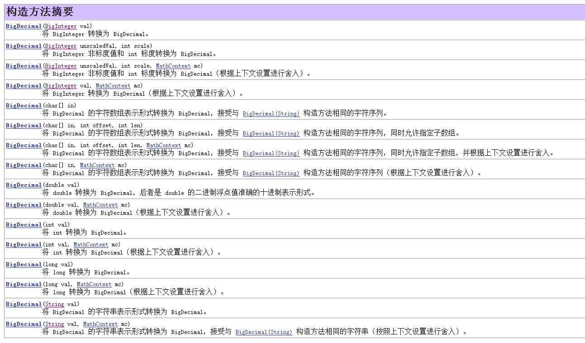
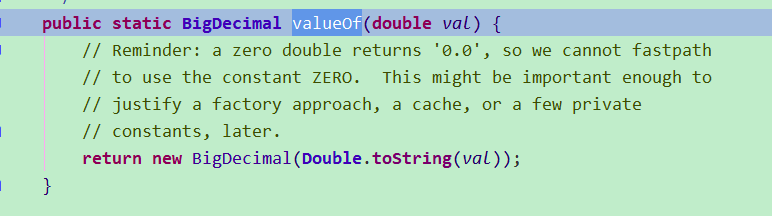

在计算机中，所有文件都是以二进制存储的，数字运算也是使用二进制进行计算的，因为计算机中不存在小数点，所以我们通常说的浮点数如float、double都是计算机使用二进制模拟出来的，但我们在计算机中运行以下代码获得的结果并不是正确的。
double a = 0.1;
double b = 0.3;
System.out.println(b-a);
// 结果为0.19999999999999998为什么呢？
我们先来看十进制小数如何转化为二进制数的
二进制小数 0.1111
第一位1表示十进制1/2
第二位1表示十进制1/4
第三位1表示十进制1/8
第四位1表示十进制1/16
......所以十进制小数转二进制小数，算法是乘以2直到没有了小数为止。举个例子，0.9表示成二进制数
0.9*2=1.8 取整数部分 1
0.8(1.8的小数部分)*2=1.6 取整数部分 1
0.6*2=1.2 取整数部分 1
0.2*2=0.4 取整数部分 0
0.4*2=0.8 取整数部分 0
0.8*2=1.6 取整数部分 1
0.6*2=1.2 取整数部分 0
......... 0.9二进制表示为(从上往下): 1100100100100......注意：上面的计算过程循环了，也就是说*2永远不可能消灭小数部分，这样算法将无限下去。很显然，小数的二进制表示有时是不可能精确的 。其实道理很简单，十进制系统中能不能准确表示出1/3呢？同样二进制系统也无法准确表示1/10。这也就解释了为什么浮点型减法出现了"减不尽"的精度丢失问题。
因为丢失精度问题，所以java引入了BigDecimal类来解决这一问题。
BigDecimal 由任意精度的整数非标度值 和32 位的整数标度 (scale) 组成。如果为零或正数，则标度是小数点后的位数。如果为负数，则将该数的非标度值乘以 10 的负scale 次幂。因此，BigDecimal表示的数值是(unscaledValue × 10-scale)。
构造函数如下

我们使用参数为double的构造方法创建对象，并打印输出代码如下
BigDecimal b1 =new BigDecimal(0.1);
System.out.println(b1);
//结果为0.1000000000000000055511151231257827021181583404541015625我们期望的结果为0.1，可是结果还是损失精度的。难道BigDecimal没用吗？
使用下面方式声明BigDecimal时，会出现精度问题
BigDecimal b = new BigDecimal(0.1);推荐用法
BigDecimal bd1 = new BigDecimal("0.1");
BigDecimal bd2 = BigDecimal.valueOf(0.1);用以上方法就不会出问题精度问题
BigDecimal.valueOf() 查看源码就可以知道，也是使用的new BigDecimal("0.1")构造函数
JDK的描述：1、参数类型为double的构造方法的结果有一定的不可预知性。有人可能认为在Java中写入new BigDecimal(0.1)所创建的BigDecimal正好等于 0.1(非标度值 1，其标度为 1)，但是它实际上等于0.1000000000000000055511151231257827021181583404541015625。这是因为0.1无法准确地表示为 double(或者说对于该情况，不能表示为任何有限长度的二进制小数)。这样，传入到构造方法的值不会正好等于 0.1(虽然表面上等于该值)。
2、另一方面，String 构造方法是完全可预知的：写入 newBigDecimal("0.1") 将创建一个 BigDecimal，它正好等于预期的 0.1。因此，比较而言，通常建议优先使用String构造方法。
3、当double必须用作BigDecimal的源时，请注意，此构造方法提供了一个准确转换；它不提供与以下操作相同的结果：先使用Double.toString(double)方法，然后使用BigDecimal(String)构造方法，将double转换为String。要获取该结果，请使用static valueOf(double)方法。
代码演示
BigDecimal a=new BigDecimal ("4.5");
BigDecimal b=new BigDecimal ("1.5");
BigDecimal c=new BigDecimal ("-10.5");
BigDecimal add_result=a.add(b);
BigDecimal subtract_result=a.subtract(b);
BigDecimal multiply_result=a.multiply(b);
BigDecimal divide_result=a.divide(b);
BigDecimal remainder_result=a.remainder(b);
BigDecimal max_result=a.max(b);
BigDecimal min_result=a.min(b);
BigDecimal abs_result=c.abs();
BigDecimal negate_result=a.negate();
Log.d("TAG","4.5+1.5="+add_result);
Log.d("TAG","4.5-1.5="+subtract_result);
Log.d("TAG","4.5*1.5="+multiply_result);
Log.d("TAG","4.5/1.5="+divide_result);
Log.d("TAG","4.5/1.5余数="+remainder_result);
Log.d("TAG","4.5和1.5最大数="+max_result);
Log.d("TAG","4.5和1.5最小数="+min_result);
Log.d("TAG","-10.5的绝对值="+abs_result);
Log.d("TAG","4.5的相反数="+negate_result);结果为
4.5+1.5=6.0
4.5-1.5=3.0
4.5*1.5=6.75
4.5/1.5=3
4.5/1.5余数=0.0
4.5和1.5最大数=4.5
4.5和1.5最小数=1.5
-10.5的绝对值=10.5
4.5的相反数=-4.5BigDecimal都是不可变的（immutable）的，在进行每一步运算时，都会产生一个新的对象，所以在做加减乘除运算时千万要保存操作后的值。
BigDecimal用scale()表示小数位数，例如：
BigDecimal d1 = new BigDecimal("123.45");
BigDecimal d2 = new BigDecimal("123.4500");
BigDecimal d3 = new BigDecimal("1234500");
System.out.println(d1.scale()); // 2,两位小数
System.out.println(d2.scale()); // 4
System.out.println(d3.scale()); // 0通过BigDecimal的stripTrailingZeros()方法，可以将一个BigDecimal格式化为一个相等的，但去掉了末尾0的BigDecimal：
BigDecimal d1 = new BigDecimal("123.4500");
BigDecimal d2 = d1.stripTrailingZeros();
System.out.println(d1.scale()); // 4
System.out.println(d2.scale()); // 2,因为去掉了00
BigDecimal d3 = new BigDecimal("1234500");
BigDecimal d4 = d1.stripTrailingZeros();
System.out.println(d3.scale()); // 0
System.out.println(d4.scale()); // -2如果一个BigDecimal的scale()返回负数，例如，-2，表示这个数是个整数，并且末尾有2个0。
可以对一个BigDecimal设置它的scale，如果精度比原始值低，那么按照指定的方法进行四舍五入或者直接截断：
public class Main {
public static void main(String[] args) {
BigDecimal d1 = new BigDecimal("123.456789");
BigDecimal d2 = d1.setScale(4, RoundingMode.HALF_UP); // 四舍五入，123.4568
BigDecimal d3 = d1.setScale(4, RoundingMode.DOWN); // 直接截断，123.4567
System.out.println(d2);
System.out.println(d3);
}
}对BigDecimal做加、减、乘时，精度不会丢失，但是做除法时，存在无法除尽的情况，这时，就必须指定精度以及如何进行截断：
BigDecimal d1 = new BigDecimal("123.456");
BigDecimal d2 = new BigDecimal("23.456789");
BigDecimal d3 = d1.divide(d2, 10, RoundingMode.HALF_UP); // 保留10位小数并四舍五入在比较两个BigDecimal的值是否相等时，要特别注意，使用equals()方法不但要求两个BigDecimal的值相等，还要求它们的scale()相等：
BigDecimal d1 = new BigDecimal("123.456");
BigDecimal d2 = new BigDecimal("123.45600");
System.out.println(d1.equals(d2)); // false,因为scale不同
System.out.println(d1.equals(d2.stripTrailingZeros())); // true,因为d2去除尾部0后scale变为2
System.out.println(d1.compareTo(d2)); // 0必须使用compareTo()方法来比较，它根据两个值的大小分别返回负数、正数和0，分别表示小于、大于和等于。
总是使用compareTo()比较两个BigDecimal的值，不要使用equals()！
如果查看BigDecimal的源码，可以发现，实际上一个BigDecimal是通过一个BigInteger和一个scale来表示的，即BigInteger表示一个完整的整数，而scale表示小数位数：
public class BigDecimal extends Number implements Comparable<BigDecimal> {
private final BigInteger intVal;
private final int scale;
}BigDecimal也是从Number继承的，也是不可变对象。
为什么BigDecimal使用String不会出现精度问题
现在我们明白为什么用double,float 出现出精度问题。现在我们要看一下BigDecimal对String做了什么不会出现精度问题
通过Debug构造方法，我们可以了解，BigDecimal底层数据结构主要是由下面四个属性值组成.
int scale; //有多少位小数(即小数点后有多少位)
int precision; //总工有多少位数字
long intCompact; //字符串去掉小数点后，转为long的值，只有当传的字符串长度小于18时才使用该言
BigInteger intVal; //当传的字符串长度大于等于18时才使用BigInteger表示数字以new BigDecimal("12.12")为例
scale值为2
precision值为4
intCompact值为1212
intVal值为空。
之所以为空是因为字符串长度没有超18位，所以不启用BigInteger表示看到这进而其实大家应该明白了，BigDecimal将String转为了long或BigInteger来进行计算。

valueOf实际上是调用相应包装类的toString方法然后使用BigDecimal的参数为String的构造方法创建对象。
public BigDecimal add(BigDecimal augend) {
long xs = this.intCompact; //整型数字表示的BigDecimal,例a的intCompact值为122
long ys = augend.intCompact;//同上
BigInteger fst = (this.intCompact != INFLATED) ? null : this.intVal;//初始化BigInteger的值，intVal为BigDecimal的一个BigInteger类型的属性
BigInteger snd = (augend.intCompact != INFLATED) ? null : augend.intVal;
int rscale = this.scale;//小数位数
long sdiff = (long) rscale - augend.scale;//小数位数之差
if (sdiff != 0) {//取小数位数多的为结果的小数位数
if (sdiff < 0) {
int raise = checkScale(-sdiff);
rscale = augend.scale;
if (xs == INFLATED ||
(xs = longMultiplyPowerTen(xs, raise)) == INFLATED)
fst = bigMultiplyPowerTen(raise);
} else {
int raise = augend.checkScale(sdiff);
if (ys == INFLATED || (ys = longMultiplyPowerTen(ys, raise)) == INFLATED)
snd = augend.bigMultiplyPowerTen(raise);
}
}
if (xs != INFLATED && ys != INFLATED) {
long sum = xs + ys;
if ((((sum ^ xs) & (sum ^ ys))) >= 0L)//判断有无溢出
return BigDecimal.valueOf(sum, rscale);//返回使用BigDecimal的静态工厂方法得到的BigDecimal实例
}
if (fst == null)
fst = BigInteger.valueOf(xs);//BigInteger的静态工厂方法
if (snd == null)
snd = BigInteger.valueOf(ys);
BigInteger sum = fst.add(snd);
return (fst.signum == snd.signum) ? new BigDecimal(sum, INFLATED, rscale, 0) :
new BigDecimal(sum, compactValFor(sum), rscale, 0);//返回通过其他构造方法得到的BigDecimal对象
}以上只是对加法源码的分析，减乘除其实最终都返回的是一个新的BigDecimal对象，因为BigInteger与BigDecimal都是不可变的（immutable）的，在进行每一步运算时，都会产生一个新的对象，所以a.add(b);虽然做了加法操作，但是a并没有保存加操作后的值，正确的用法应该是a=a.add(b);
(1)商业计算使用BigDecimal。
(2)尽量使用参数类型为String的构造函数。
(3) BigDecimal都是不可变的（immutable）的，在进行每一步运算时，都会产生一个新的对象，所以在做加减乘除运算时千万要保存操作后的值。
(4)我们往往容易忽略JDK底层的一些实现细节，导致出现错误，需要多加注意。